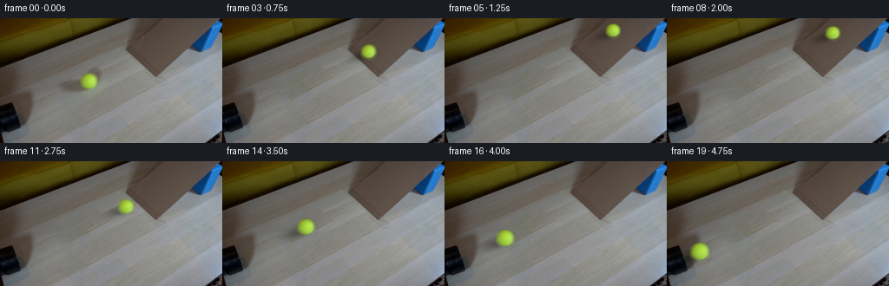
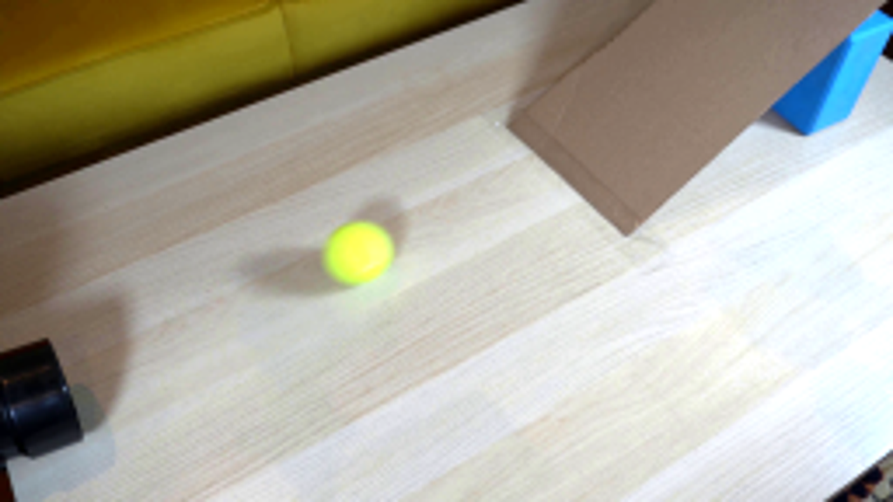
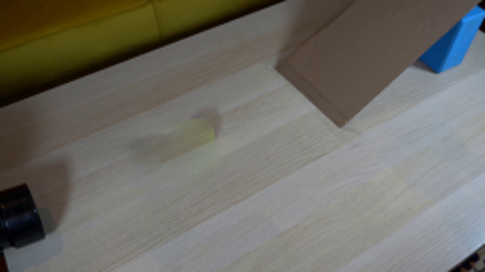
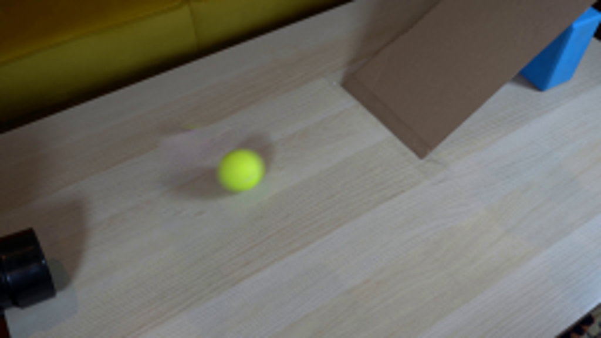
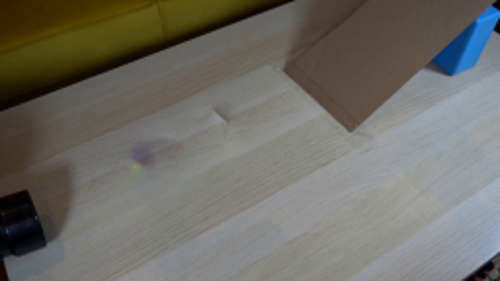
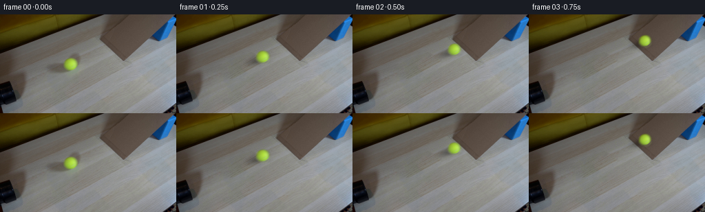
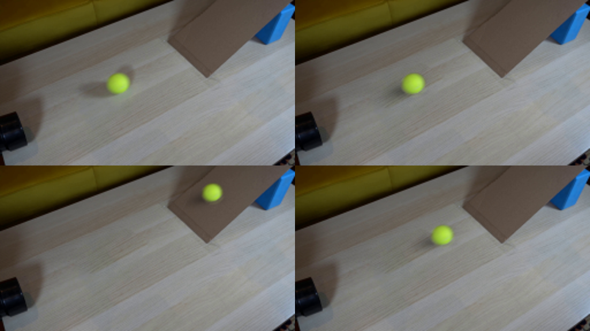

CODING AGENTS AS PIXEL WORLD MODELS
traex/GPT-6.1-Sol · 0019
点击播放 · 原生 RGB 像素
逐轮保存的候选
回放视频、检查图与代码变化。
每份候选均可单独播放。实际图片检查记录在下方工具轨迹中。
候选 01播放与检查图
点击播放 · 原生 RGB 像素

展开代码变化
--- 上一保存版本
+++ 本次保存版本
@@ -0,0 +1,132 @@
+from pathlib import Path
+import math
+import cv2
+import numpy as np
+from PIL import Image
+from artifact_io import save
+
+ROOT = Path(__file__).resolve().parent
+
+
+def clean_background(im):
+ h,w=im.shape[:2]
+ mask=np.zeros((h,w),np.uint8)
+ cv2.ellipse(mask,(96,75),(35,22),-15,0,360,255,-1)
+ bx,by,bw,bh=cv2.boundingRect(mask)
+ donor=cv2.warpAffine(im,np.float32([[1,0,0],[0,1,-38]]),(w,h),borderMode=cv2.BORDER_REFLECT)
+ return cv2.seamlessClone(donor,im,mask,(bx+bw//2,by+bh//2),cv2.NORMAL_CLONE)
+
+
+def shadow_field(xx,yy,cx,cy,scale=1.0,on_ramp=0.0):
+ # The soft elongated cast shadow is displaced away from the overhead lamp.
+ dx=xx-(cx-10.0*scale)
+ dy=yy-(cy+5.5*scale)
+ u=(dx-0.32*dy)/scale
+ v=(dy+0.31*dx)/scale
+ broad=np.exp(-.5*((u/11.0)**2+(v/4.5)**2))*.29
+ dx=xx-(cx-.5*scale);dy=yy-(cy+7.25*scale)
+ contact=np.exp(-.5*((dx/(6.7*scale))**2+(dy/(2.0*scale))**2))*.22
+ return 1.0-(1.0-broad)*(1.0-contact)
+
+
+def make_ball_sprite(im,bg):
+ # Foreground matting uses the yellow felt's distinctive local chroma.
+ y,x=np.mgrid[:im.shape[0],:im.shape[1]].astype(np.float32)
+ cx,cy=102.45,72.7
+ shadow=shadow_field(x,y,cx,cy)
+ backing=bg.astype(np.float32)*(1-shadow[...,None])
+ radius=np.sqrt(((x-cx)/1.025)**2+((y-cy)/.965)**2)
+ chroma=(im[:,:,1].astype(float)-im[:,:,2])- (backing[:,:,1]-backing[:,:,2])
+ alpha=np.clip(chroma/133.0,0,1).astype(np.float32)
+ # Boundary matte falls smoothly into the photographed defocus.
+ core=np.clip((8.55-radius)/1.9,0,1)
+ alpha=np.maximum(alpha,core)
+ alpha*=np.clip((13.0-radius)/2.0,0,1)
+ alpha=np.where(radius<13,alpha,0)
+ # Only the ball, not small color variations of the wood, belongs to the matte.
+ alpha=np.where(alpha>.025,alpha,0)
+ color=(im.astype(np.float32)-backing*(1-alpha[...,None]))/np.maximum(alpha[...,None],.05)
+ color=np.clip(color,[75,105,22],[212,240,135])
+ pre=color*alpha[...,None]
+ return pre,alpha
+
+
+def state(t):
+ x0=102.45; cx_toe=163.0
+ t_toe=.68
+ # Constant rolling resistance on the level wood, then a gravity-driven
+ # deceleration/ascent and reversal on the inclined piece of cardboard.
+ a_wood=12.0
+ v_start=(cx_toe-x0)/t_toe+.5*a_wood*t_toe
+ v_ramp=80.0
+ a_up=90.0
+ time_up=v_ramp/a_up
+ distance_up=v_ramp**2/(2*a_up)
+ a_down=81.0
+ time_down=math.sqrt(2*distance_up/a_down)
+ end_ramp=t_toe+time_up+time_down
+ if t<t_toe:
+ x=x0+v_start*t-.5*a_wood*t*t
+ y=72.7-.485*(x-x0)
+ on_ramp=0.0
+ dist=x-x0
+ elif t<t_toe+time_up:
+ u=t-t_toe
+ s=v_ramp*u-.5*a_up*u*u
+ x=cx_toe+s
+ y=72.7-.485*(cx_toe-x0)-.95*s
+ on_ramp=1.0
+ dist=cx_toe-x0+s*1.35
+ elif t<end_ramp:
+ u=t-t_toe-time_up
+ s=distance_up-.5*a_down*u*u
+ x=cx_toe+s
+ y=72.7-.485*(cx_toe-x0)-.95*s
+ on_ramp=1.0
+ dist=cx_toe-x0+s*1.35
+ else:
+ u=t-end_ramp
+ v_return=a_down*time_down
+ s=-v_return*u+.5*18.0*u*u
+ x=cx_toe+s
+ y=72.7-.485*(x-x0)
+ on_ramp=0.0
+ dist=x-x0
+ scale=1.0-.00165*(x-x0)
+ return x,y,scale,on_ramp,dist
+
+
+def render(t,bg,pre,alpha,xx,yy):
+ x,y,scale,on_ramp,dist=state(t)
+ sh=shadow_field(xx,yy,x,y,scale,on_ramp)
+ canvas=bg.astype(np.float32)*(1-sh[...,None])
+ mat=np.float32([[scale,0,x-102.45*scale],[0,scale,y-72.7*scale]])
+ a=cv2.warpAffine(alpha,mat,(256,144),flags=cv2.INTER_CUBIC)
+ p=cv2.warpAffine(pre,mat,(256,144),flags=cv2.INTER_CUBIC)
+ a=np.clip(a,0,1)
+ p=np.clip(p,0,255*a[...,None])
+ # The ramp has similar illumination but slightly warmer reflected fill.
+ fill=np.array([1.0, .993, .975],np.float32) if on_ramp else np.ones(3,np.float32)
+ canvas=canvas*(1-a[...,None])+p*fill
+ return np.clip(canvas,0,255)
+
+
+def main():
+ im=np.array(Image.open(ROOT/'first_frame.png').convert('RGB'))
+ bg=clean_background(im)
+ pre,alpha=make_ball_sprite(im,bg)
+ yy,xx=np.mgrid[:144,:256].astype(np.float32)
+ frames=[im]
+ for i in range(1,20):
+ t=i/4
+ # Short, real-time camera integration, not a long synthetic motion trail.
+ samples=[render(t+offset,bg,pre,alpha,xx,yy) for offset in np.linspace(-.012,.012,5)]
+ frames.append(np.round(np.mean(samples,axis=0)).astype(np.uint8))
+ frames=np.stack(frames)
+ save(frames,ROOT)
+ Image.fromarray(bg).save(ROOT/'.tmp/background.png')
+ test=np.round(render(0,bg,pre,alpha,xx,yy)).astype(np.uint8)
+ Image.fromarray(test).save(ROOT/'.tmp/reconstructed_start.png')
+ print('Saved',frames.shape,frames.dtype)
+
+if __name__=='__main__':main()
可观测工具轨迹
实际执行的命令与返回图片。
命令 1exit 0
/bin/bash -lc 'ls -la && cat prompt.txt && cat GENERATION_RULES.md'
命令 2exit 0
/bin/bash -lc "cat artifact_io.py && python - <<'PY'
from PIL import Image
im=Image.open('first_frame.png'); print(im.size); im.resize((1024,576)).save('.tmp/upscaled.png')
PY"命令 3exit 0
/bin/bash -lc "python - <<'PY'
import cv2,numpy as np
from PIL import Image,ImageEnhance
im=Image.open('first_frame.png')
ImageEnhance.Brightness(im).enhance(1.6).resize((1024,576)).save('.tmp/bright.png')
print('cv2',cv2.__version__)
PY"命令 4exit 0
/bin/bash -lc "python - <<'PY' import numpy as np p=np.array([102.,73.]); v=np.array([1,-39/85]); A=np.array([145.,35.]);w=np.array([35.,33.]);s=np.linalg.solve(np.stack([v,-w],1),A-p); print(s,p+s[0]*v) PY"
命令 5exit 0
/bin/bash -lc "python - <<'PY'
from PIL import Image
im=Image.open('first_frame.png')
im.crop((50,48,130,103)).resize((800,550)).save('.tmp/ball_crop.png')
PY"命令 6exit 0
/bin/bash -lc "cat > .tmp/test_background.py <<'PY'
import cv2
import numpy as np
from PIL import Image,ImageDraw
im=np.asarray(Image.open('first_frame.png').convert('RGB'))
h,w=im.shape[:2]
y,x=np.mgrid[:h,:w]
mask=np.zeros((h,w),np.uint8)
cv2.ellipse(mask,(102,73),(15,14),0,0,360,255,-1)
cv2.ellipse(mask,(89,78),(23,8),-12,0,360,255,-1)
cv2.ellipse(mask,(110,63),(7,12),32,0,360,255,-1)
cv2.ellipse(mask,(105,84),(17,8),-15,0,360,255,-1)
for rad in [3,5,9]:
bg=cv2.inpaint(im,mask,rad,cv2.INPAINT_TELEA)
Image.fromarray(bg).resize((1024,576)).save(f'.tmp/bg{rad}.png')
# clean wooden patch shifted along boardgrain, locally adjust low frequency illumination
src=np.roll(im,shift=(25,14),axis=(0,1)).astype(np.float32)
# poisson seamless clone
bg=cv2.seamlessClone(src.astype(np.uint8),im,mask,(92,74),cv2.NORMAL_CLONE)
Image.fromarray(bg).resize((1024,576)).save('.tmp/clone.png')
Image.fromarray(mask).save('.tmp/removal_mask.png')
PY
python .tmp/test_background.py"命令 7exit 0
/bin/bash -lc "cat > .tmp/bgs.py <<'PY'
exec(open('.tmp/test_background.py').read().split('for rad')[0])
mask=cv2.dilate(mask,np.ones((3,3),np.uint8))
bx,by,bw,bh=cv2.boundingRect(mask);c=(bx+bw//2,by+bh//2)
print(c,(bx,by,bw,bh))
for dx,dy in [(-36,20),(20,27),(38,-18),(-24,30),(30,20)]:
src=cv2.warpAffine(im,np.array([[1.,0,-dx],[0,1.,-dy]]),(w,h),flags=cv2.INTER_LINEAR,borderMode=cv2.BORDER_REFLECT)
bg=cv2.seamlessClone(src,im,mask,c,cv2.NORMAL_CLONE)
Image.fromarray(bg).resize((1024,576)).save(f'.tmp/clone_{dx}_{dy}.png')
PY
python .tmp/bgs.py"命令 8exit 0
/bin/bash -lc "sed 's/\\[(-36,20),(20,27),(38,-18),(-24,30),(30,20)\\]/[(0,40),(-5,40),(40,40),(50,10)]/' .tmp/bgs.py > .tmp/bgs2.py; python .tmp/bgs2.py"
命令 9exit 0
/bin/bash -lc "python - <<'PY' import numpy as np v=np.array([1,-.485]); A=np.array([145.,35.]); w=np.array([34.,32.]);p=np.array([102.4,81.3]);s=np.linalg.solve(np.stack([v,-w],1),A-p);print(s,p+s[0]*v) PY"
命令 10exit 0
/bin/bash -lc "python - <<'PY'
import numpy as np
from PIL import Image
im=np.array(Image.open('first_frame.png'))
for y in [63,65,68,71,73,76,79,81,83]:
print(y, [(x,im[y,x].tolist()) for x in [93,96,99,102,105,108,111,114]])
PY"命令 11exit 0
/bin/bash -lc "cat > .tmp/clean.py <<'PY'
import numpy as np,cv2
from PIL import Image
im=np.array(Image.open('first_frame.png'));h,w=im.shape[:2]
m=np.zeros((h,w),np.uint8)
cv2.ellipse(m,(96,75),(35,22),-15,0,360,255,-1)
bx,by,bw,bh=cv2.boundingRect(m);print(bx,by,bw,bh)
for dx,dy in [(0,38),(12,38),(40,30),(-30,30)]:
# align center of mask roi exactly with source
src=cv2.warpAffine(im,np.float32([[1,0,-dx],[0,1,-dy]]),(w,h),borderMode=cv2.BORDER_REFLECT)
bg=cv2.seamlessClone(src,im,m,(bx+bw//2,by+bh//2),cv2.NORMAL_CLONE)
Image.fromarray(bg).resize((1024,576)).save(f'.tmp/clean_{dx}_{dy}.png')
PY
python .tmp/clean.py"命令 12exit 0
/bin/bash -lc "cat > generate.py <<'PY'
from pathlib import Path
import math
import cv2
import numpy as np
from PIL import Image
from artifact_io import save
ROOT = Path(__file__).resolve().parent
def clean_background(im):
h,w=im.shape[:2]
mask=np.zeros((h,w),np.uint8)
cv2.ellipse(mask,(96,75),(35,22),-15,0,360,255,-1)
bx,by,bw,bh=cv2.boundingRect(mask)
donor=cv2.warpAffine(im,np.float32([[1,0,0],[0,1,-38]]),(w,h),borderMode=cv2.BORDER_REFLECT)
return cv2.seamlessClone(donor,im,mask,(bx+bw//2,by+bh//2),cv2.NORMAL_CLONE)
def shadow_field(xx,yy,cx,cy,scale=1.0,on_ramp=0.0):
# The soft elongated cast shadow is displaced away from the overhead lamp.
dx=xx-(cx-10.0*scale)
dy=yy-(cy+5.5*scale)
u=(dx-0.32*dy)/scale
v=(dy+0.31*dx)/scale
broad=np.exp(-.5*((u/11.0)**2+(v/4.5)**2))*.29
dx=xx-(cx-.5*scale);dy=yy-(cy+7.25*scale)
contact=np.exp(-.5*((dx/(6.7*scale))**2+(dy/(2.0*scale))**2))*.22
return 1.0-(1.0-broad)*(1.0-contact)
def make_ball_sprite(im,bg):
# Foreground matting uses the yellow felt's distinctive local chroma.
y,x=np.mgrid[:im.shape[0],:im.shape[1]].astype(np.float32)
cx,cy=102.45,72.7
shadow=shadow_field(x,y,cx,cy)
backing=bg.astype(np.float32)*(1-shadow[...,None])
radius=np.sqrt(((x-cx)/1.025)**2+((y-cy)/.965)**2)
chroma=(im[:,:,1].astype(float)-im[:,:,2])- (backing[:,:,1]-backing[:,:,2])
alpha=np.clip(chroma/133.0,0,1).astype(np.float32)
# Boundary matte falls smoothly into the photographed defocus.
core=np.clip((8.55-radius)/1.9,0,1)
alpha=np.maximum(alpha,core)
alpha*=np.clip((13.0-radius)/2.0,0,1)
alpha=np.where(radius<13,alpha,0)
# Only the ball, not small color variations of the wood, belongs to the matte.
alpha=np.where(alpha>.025,alpha,0)
color=(im.astype(np.float32)-backing*(1-alpha[...,None]))/np.maximum(alpha[...,None],.05)
color=np.clip(color,[75,105,22],[212,240,135])
pre=color*alpha[...,None]
return pre,alpha
def state(t):
x0=102.45; cx_toe=163.0
t_toe=.68
# Constant rolling resistance on the level wood, then a gravity-driven
# deceleration/ascent and reversal on the inclined piece of cardboard.
a_wood=12.0
v_start=(cx_toe-x0)/t_toe+.5*a_wood*t_toe
v_ramp=80.0
a_up=90.0
time_up=v_ramp/a_up
distance_up=v_ramp**2/(2*a_up)
a_down=81.0
time_down=math.sqrt(2*distance_up/a_down)
end_ramp=t_toe+time_up+time_down
if t<t_toe:
x=x0+v_start*t-.5*a_wood*t*t
y=72.7-.485*(x-x0)
on_ramp=0.0
dist=x-x0
elif t<t_toe+time_up:
u=t-t_toe
s=v_ramp*u-.5*a_up*u*u
x=cx_toe+s
y=72.7-.485*(cx_toe-x0)-.95*s
on_ramp=1.0
dist=cx_toe-x0+s*1.35
elif t<end_ramp:
u=t-t_toe-time_up
s=distance_up-.5*a_down*u*u
x=cx_toe+s
y=72.7-.485*(cx_toe-x0)-.95*s
on_ramp=1.0
dist=cx_toe-x0+s*1.35
else:
u=t-end_ramp
v_return=a_down*time_down
s=-v_return*u+.5*18.0*u*u
x=cx_toe+s
y=72.7-.485*(x-x0)
on_ramp=0.0
dist=x-x0
scale=1.0-.00165*(x-x0)
return x,y,scale,on_ramp,dist
def render(t,bg,pre,alpha,xx,yy):
x,y,scale,on_ramp,dist=state(t)
sh=shadow_field(xx,yy,x,y,scale,on_ramp)
canvas=bg.astype(np.float32)*(1-sh[...,None])
mat=np.float32([[scale,0,x-102.45*scale],[0,scale,y-72.7*scale]])
a=cv2.warpAffine(alpha,mat,(256,144),flags=cv2.INTER_CUBIC)
p=cv2.warpAffine(pre,mat,(256,144),flags=cv2.INTER_CUBIC)
a=np.clip(a,0,1)
p=np.clip(p,0,255*a[...,None])
# The ramp has similar illumination but slightly warmer reflected fill.
fill=np.array([1.0, .993, .975],np.float32) if on_ramp else np.ones(3,np.float32)
canvas=canvas*(1-a[...,None])+p*fill
return np.clip(canvas,0,255)
def main():
im=np.array(Image.open(ROOT/'first_frame.png').convert('RGB'))
bg=clean_background(im)
pre,alpha=make_ball_sprite(im,bg)
yy,xx=np.mgrid[:144,:256].astype(np.float32)
frames=[im]
for i in range(1,20):
t=i/4
# Short, real-time camera integration, not a long synthetic motion trail.
samples=[render(t+offset,bg,pre,alpha,xx,yy) for offset in np.linspace(-.012,.012,5)]
frames.append(np.round(np.mean(samples,axis=0)).astype(np.uint8))
frames=np.stack(frames)
save(frames,ROOT)
Image.fromarray(bg).save(ROOT/'.tmp/background.png')
test=np.round(render(0,bg,pre,alpha,xx,yy)).astype(np.uint8)
Image.fromarray(test).save(ROOT/'.tmp/reconstructed_start.png')
print('Saved',frames.shape,frames.dtype)
if __name__=='__main__':main()
PY
python generate.py"命令 13exit 0
/bin/bash -lc "python - <<'PY'
from PIL import Image
im=Image.new('RGB',(1024,576))
for i,n in enumerate(['first_frame.png','.tmp/reconstructed_start.png','frames/04.png','frames/12.png']):
im.paste(Image.open(n).resize((512,288)),((i%2)*512,(i//2)*288))
im.save('.tmp/detail.png')
PY"命令 14exit 0
/bin/bash -lc "python - <<'PY'
import numpy as np
from PIL import Image
from pathlib import Path
p=np.load('pixels.npz')['pixels']
f=np.array(Image.open('frames/00.png'))
a=np.array(Image.open('first_frame.png'))
assert np.array_equal(a,f)
assert p.shape==(144,256,20)
assert len(list(Path('frames').glob('*.png')))==20
print('Verified: 20 RGB frames, 256 x 144, first frame pixel-identical.')
PY
command -v ffmpeg || true"视觉工具实际返回图片 1

视觉工具实际返回图片 2

视觉工具实际返回图片 3
视觉工具实际返回图片 4
视觉工具实际返回图片 5

视觉工具实际返回图片 6
视觉工具实际返回图片 7

视觉工具实际返回图片 8

视觉工具实际返回图片 9
视觉工具实际返回图片 10
视觉工具实际返回图片 11
视觉工具实际返回图片 12

视觉工具实际返回图片 13

视觉工具实际返回图片 14

保存候选 1 份；完成命令 14 次；可验证图片返回 14 张。原始 API 响应与完整日志保留在本地。